Solving MDPs with Linear Approximation
Michael Hahsler
Source:vignettes/LinearApproximation.Rmd
LinearApproximation.RmdIntroduction
The package markovDP (Hahsler 2024) implements episodic semi-gradient Sarsa with linear state-value function approximation following Sutton and Barto (2018). The state-action value construction uses the approach described in Geramifard et al. (2013). First, we will use the state features directly and then we will use a Fourier basis (see Value Function Approximation in Reinforcement Learning Using the Fourier Basis (2011)).
Linear Approximation
The state-action value function is approximated by
where is a weight vector and is a feature function that maps each state-action pair to a feature vector. The gradient of the state-action function is
State-action Feature Vector Construction
For a small number of actions, we can follow the construction described by Geramifard et al. (2013) which uses a state feature function to construct the complete state-action feature vector. Here, we also add an intercept term. The state-action feature vector has length . It has the intercept and then one component for each action. All these components are set to zero and only the active action component is set to , where is the current state. For example, for the state feature vector and action out of three possible actions , the complete state-action feature vector is . The leading 1 is for the intercept and the zeros represent the two not chosen actions.
This construction is implemented in
add_linear_approx_Q_function().
Helper Functions
The following helper functions for using approximation are available:
-
approx_Q_value()calculates approximate Q values given the weights in the model or specified weights. -
approx_greedy_action()uses approximate Q values given the weights in the model or specified weights to find the greedy action for a state. -
approx_greedy_policy()calculates the greedy-policy for the approximate Q values given the weights in the model or specified weights.
Episodic Semi-gradient Sarsa
The implementation follows the algorithm given in Sutton and Barto (2018).
Example 1: A maze without walls
The step cost is 1. The start is top-left and the goal (+100 reward) is bottom-right. This is the ideal problem for a linear approximation of the Q-function using the x/y location as state features.
We start with defining an MDP for a small maze without walls.
library(markovDP)
m <- gw_maze_MDP(c(5, 5), start = "s(1,1)", goal = "s(5,5)")State features for linear approximation are constructed automatically as the x/y coordinates for the gridworld.
get_state_features(m)
#> x1 x2
#> s(1,1) 1 1
#> s(2,1) 2 1
#> s(3,1) 3 1
#> s(4,1) 4 1
#> s(5,1) 5 1
#> s(1,2) 1 2
#> s(2,2) 2 2
#> s(3,2) 3 2
#> s(4,2) 4 2
#> s(5,2) 5 2
#> s(1,3) 1 3
#> s(2,3) 2 3
#> s(3,3) 3 3
#> s(4,3) 4 3
#> s(5,3) 5 3
#> s(1,4) 1 4
#> s(2,4) 2 4
#> s(3,4) 3 4
#> s(4,4) 4 4
#> s(5,4) 5 4
#> s(1,5) 1 5
#> s(2,5) 2 5
#> s(3,5) 3 5
#> s(4,5) 4 5
#> s(5,5) 5 5solve_MDP_APPROX() automatically constructs state-action
features and adds them with an approximate Q function to the model. The
state-action features are constructed as a vector with weights for an
intercept and the state features for each action.
set.seed(1000)
sol <- solve_MDP_APPROX(m, horizon = 1000, n = 100)
sol
#> MDPModel, MDP - A Maze
#> Discount factor: 1
#> Horizon: 1000 epochs
#> Size: 4 actions / 25 states
#> Storage: transition prob as matrix / reward as matrix. Total size: 134.2 Kb
#> Start: s(1,1)
#> Model list components: 'name', 'discount', 'horizon', 'states',
#> 'actions', 'start', 'transition_model', 'reward', 'info',
#> 'absorbing_states', 'solution'
#>
#> Solved:
#> Method: 'sarsa'
#> Solution converged: NA
#> Solution list components: 'method', 'alpha', 'epsilon', 'n',
#> 'converged', 'q_approx_linear', 'policy'The approximation contains the approximation function, the gradient function, the transformation function, and the current weights.
sol$solution$q_approx_linear
#> q_approx_linear, approx_linear
#>
#> transformation:
#> function (x)
#> {
#> x <- (x - min)/(max - min)
#> if (intercept)
#> x <- c(x0 = 1, x)
#> x
#> }
#> <bytecode: 0x55d8c877e0a8>
#> <environment: 0x55d8c877d858>
#>
#> weights:
#> up.x0 up.x1 up.x2 right.x0 right.x1 right.x2 down.x0 down.x1
#> 14.65528 12.30324 11.06122 28.63005 54.18888 17.00129 35.55476 23.71475
#> down.x2 left.x0 left.x1 left.x2
#> 41.28264 13.77898 12.14905 9.10107
gw_plot(sol)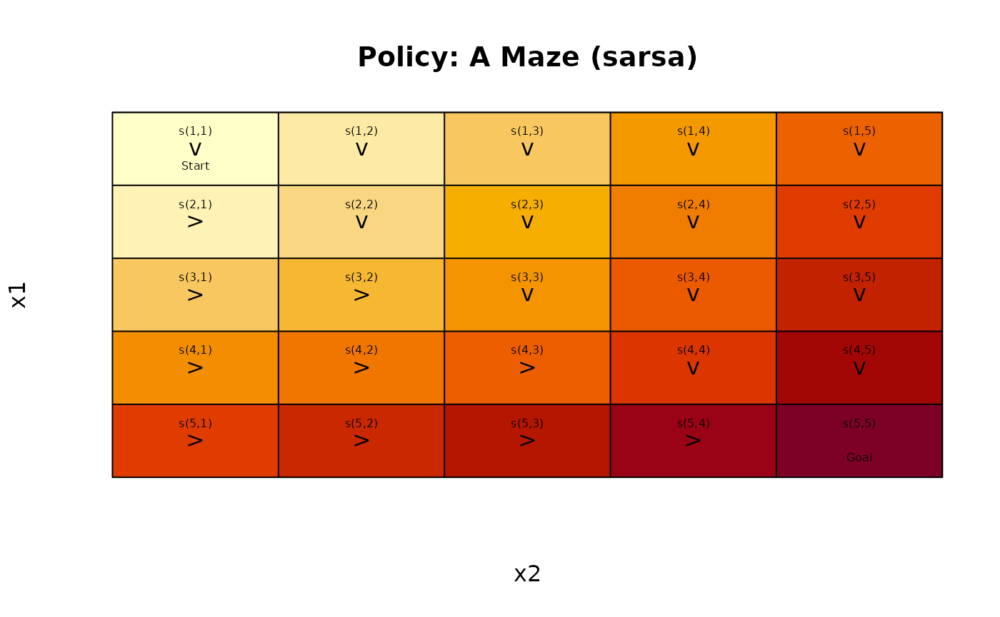
gw_matrix(sol, what = "value")
#> [,1] [,2] [,3] [,4] [,5]
#> [1,] 35.55476 45.87542 56.19608 66.51674 76.83740
#> [2,] 42.17727 51.80411 62.12477 72.44543 82.76609
#> [3,] 55.72449 59.97481 68.05346 78.37411 88.69477
#> [4,] 69.27171 73.52203 77.77235 84.30280 94.62346
#> [5,] 82.81893 87.06925 91.31957 95.56989 100.55215The approximate value function is continuous and can also be displayed using matrix shading and contours
approx_V_plot(sol)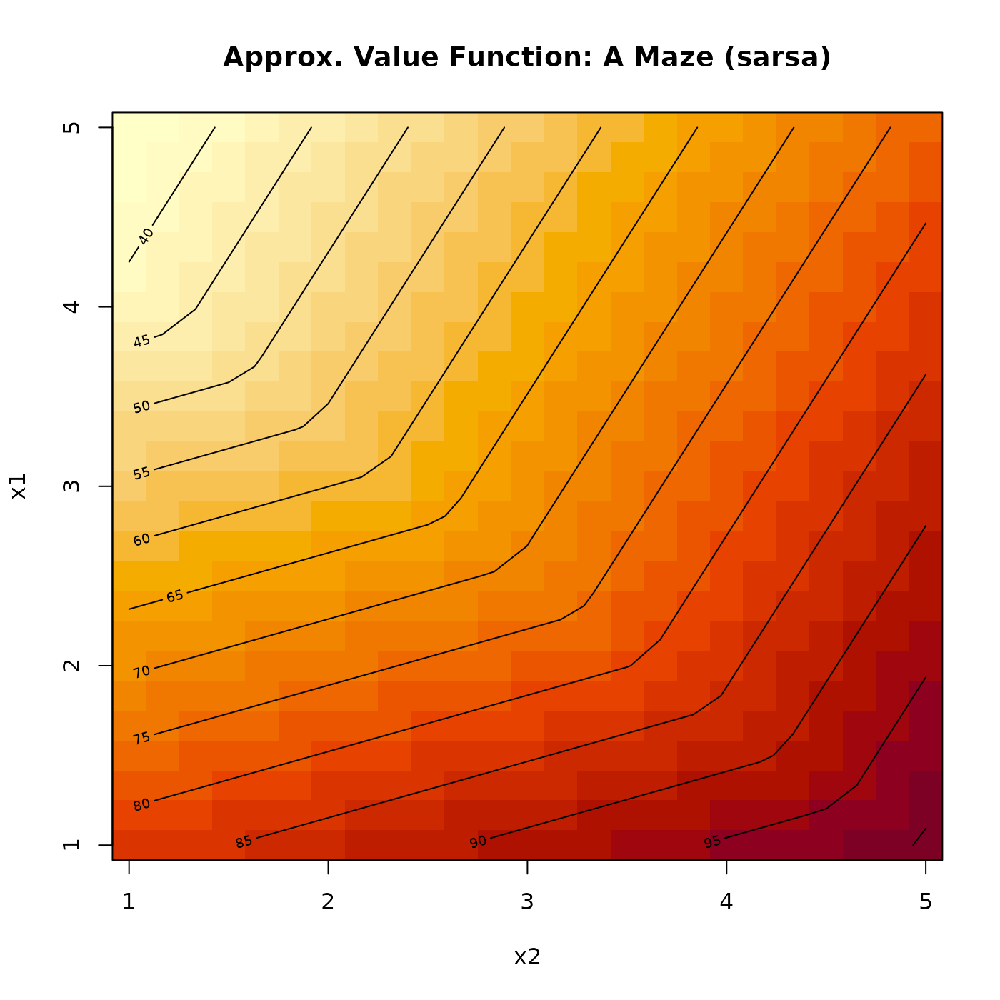
Example 2: Stuart Russell’s 3x4 Maze using Linear Approximation
Linear Basis
The wall and the -1 absorbing state make linear approximation using just the position more difficult.
Adding the linear approximation translates state names of the format
s(feature list) automatically.
sol <- solve_MDP_APPROX(Maze, horizon = 100, n = 100)
gw_plot(sol)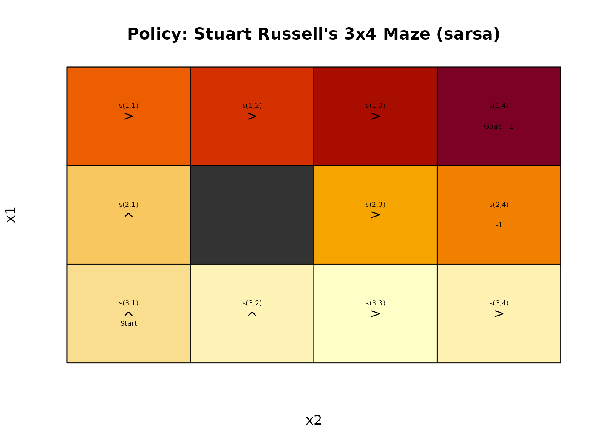
gw_matrix(sol, what = "value")
#> [,1] [,2] [,3] [,4]
#> [1,] 0.08549895 0.1668449 0.24819083 0.32953677
#> [2,] -0.14760272 NA -0.05836299 0.02298295
#> [3,] -0.21225927 -0.3014555 -0.36491681 -0.28357087The linear approximation cannot deal with the center wall and the -1 absorbing state.
Order-1 Polynomial Basis
set.seed(2000)
sol <- solve_MDP_APPROX(Maze, horizon = 100, n = 100,
transformation = transformation_polynomial_basis, order = 1)
gw_matrix(sol, what = "value")
#> [,1] [,2] [,3] [,4]
#> [1,] 0.06302514 0.1468219 0.2306187 0.31441548
#> [2,] -0.17499698 NA -0.1021554 -0.05995423
#> [3,] -0.23813195 -0.3590735 -0.4349296 -0.43432394
gw_plot(sol)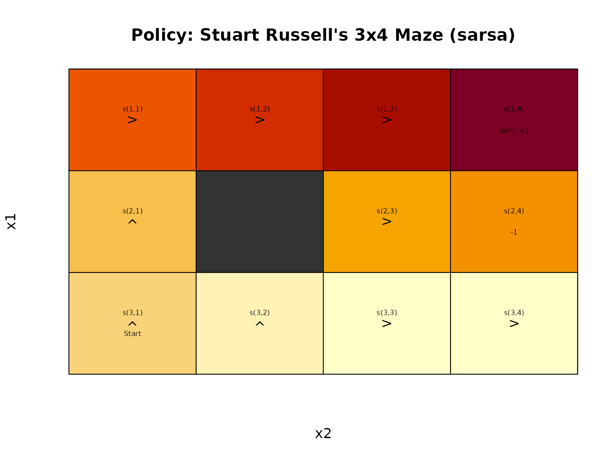
approx_V_plot(sol)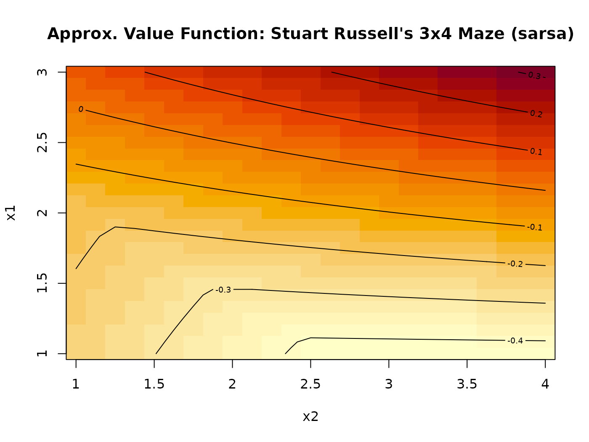
Radial Basis Function
set.seed(2000)
sol <- solve_MDP_APPROX(Maze, horizon = 100, n = 100,
transformation = transformation_RBF_basis, centers = 4)
gw_matrix(sol, what = "value")
#> [,1] [,2] [,3] [,4]
#> [1,] -0.3146291 -0.3479713 -0.3310448 -0.2711929
#> [2,] -0.4932884 NA -0.5356629 -0.4464933
#> [3,] -0.5197404 -0.5890358 -0.5751003 -0.4840980
gw_plot(sol)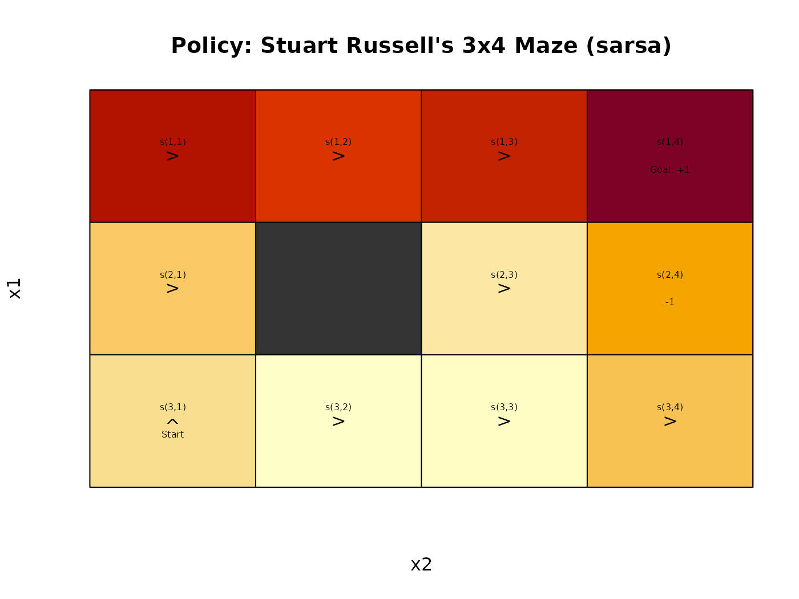
approx_V_plot(sol)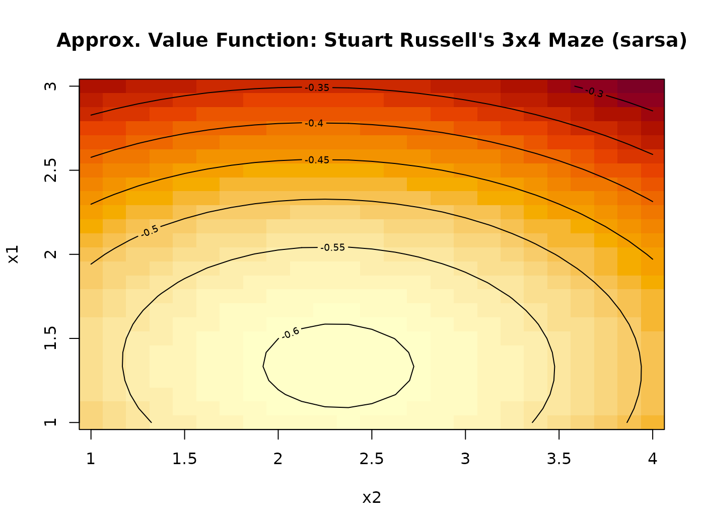
Order-1 Fourier Basis
set.seed(2000)
sol <- solve_MDP_APPROX(Maze, horizon = 100, n = 500,
transformation = transformation_fourier_basis, order = 1)
gw_matrix(sol, what = "value")
#> [,1] [,2] [,3] [,4]
#> [1,] 0.5855731 0.69108058 0.9020955 1.0076030
#> [2,] 0.2697708 NA 0.3403607 0.3252111
#> [3,] 0.1598483 -0.08908583 -0.2140090 -0.2163907
gw_plot(sol)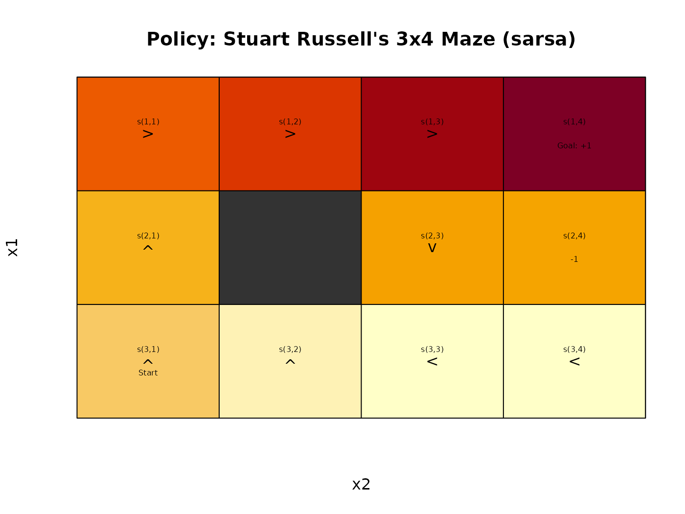
approx_V_plot(sol)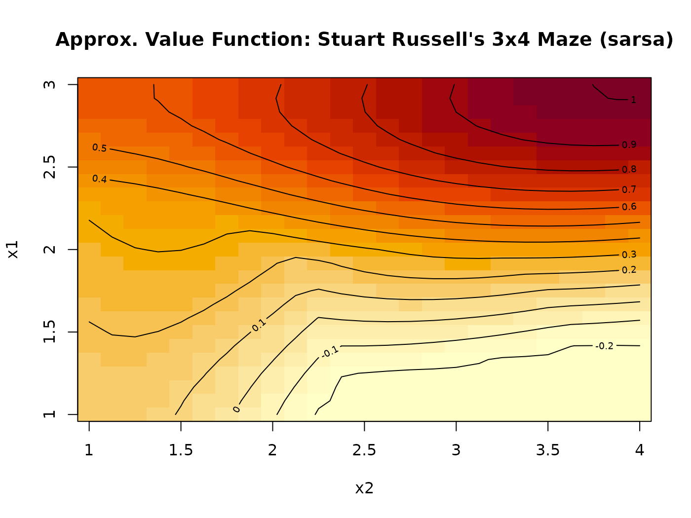
Example 3: Wall Maze
Maze <- gw_read_maze(
textConnection(c("XXXXXXXXXXXX",
"X X",
"X S X",
"X X",
"XXXXXXXXX X",
"X X",
"X G X",
"X X",
"XXXXXXXXXXXX"
)))We use a Fourier basis.
set.seed(2000)
sol <- solve_MDP_APPROX(Maze, horizon = 100, n = 100,
transformation = transformation_fourier_basis, order = 2)
gw_matrix(sol, what = "value")
#> [,1] [,2] [,3] [,4] [,5] [,6] [,7]
#> [1,] NA NA NA NA NA NA NA
#> [2,] NA -46.502016 -46.6903325 -46.71394582 -46.2849930 -46.665292 -47.12910
#> [3,] NA -46.666536 -47.0613781 -47.02980311 -46.7562387 -46.542679 -46.54348
#> [4,] NA -44.270445 -43.7844902 -42.36769437 -41.4314036 -40.585566 -40.10950
#> [5,] NA NA NA NA NA NA NA
#> [6,] NA -24.138325 -18.2328292 -16.35658238 -10.1888835 -8.506035 -11.11675
#> [7,] NA -9.133891 -3.2647336 -0.06000604 -0.8634507 -5.222390 -11.66333
#> [8,] NA 1.867472 0.2316553 -4.23914364 -10.3996297 -16.817582 -22.26907
#> [9,] NA NA NA NA NA NA NA
#> [,8] [,9] [,10] [,11] [,12]
#> [1,] NA NA NA NA NA
#> [2,] -47.95976 -48.15972 -47.89146 -47.78023 NA
#> [3,] -46.65089 -46.77235 -45.60198 -44.36449 NA
#> [4,] -39.82375 -39.89376 -38.33277 -36.62271 NA
#> [5,] NA NA -31.21900 -29.80965 NA
#> [6,] -16.37073 -21.99432 -26.13210 -27.34102 NA
#> [7,] -18.31313 -23.63792 -26.97048 -28.28813 NA
#> [8,] -26.09657 -28.28826 -29.26895 -29.21684 NA
#> [9,] NA NA NA NA NA
gw_plot(sol)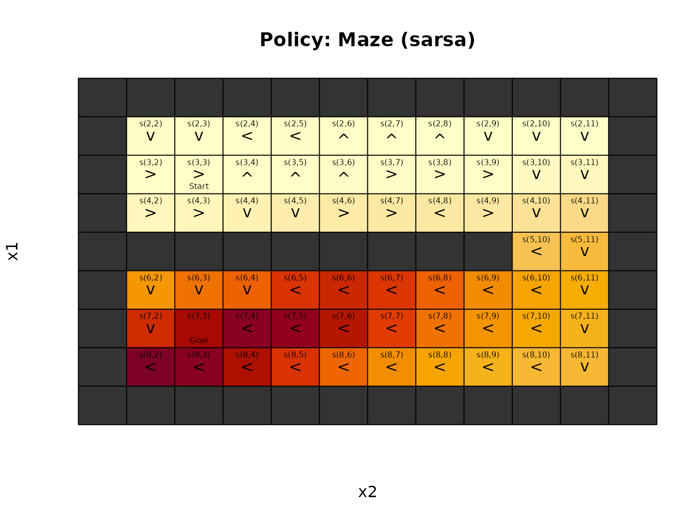
approx_V_plot(sol)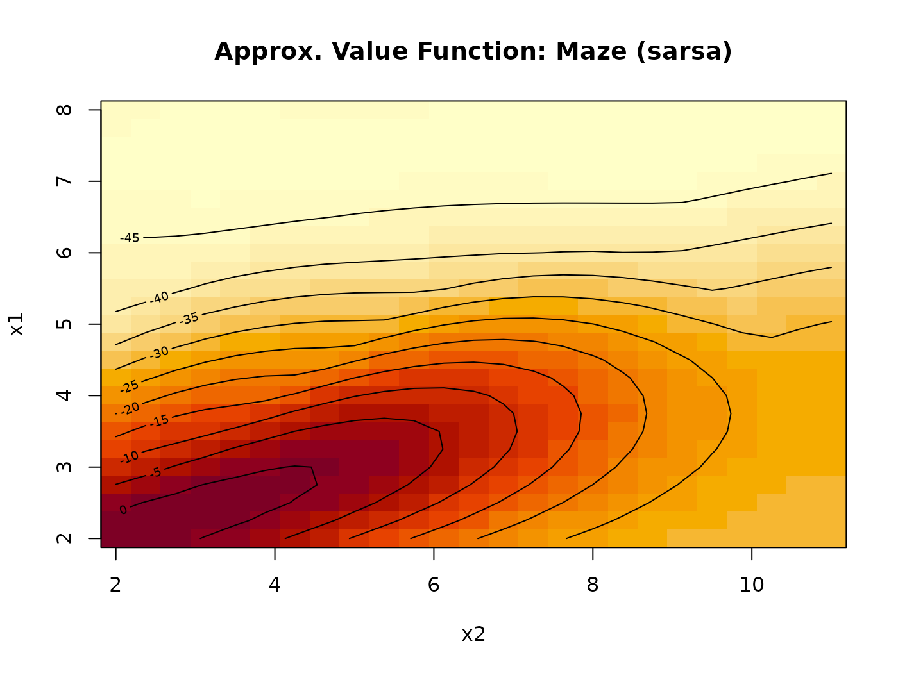